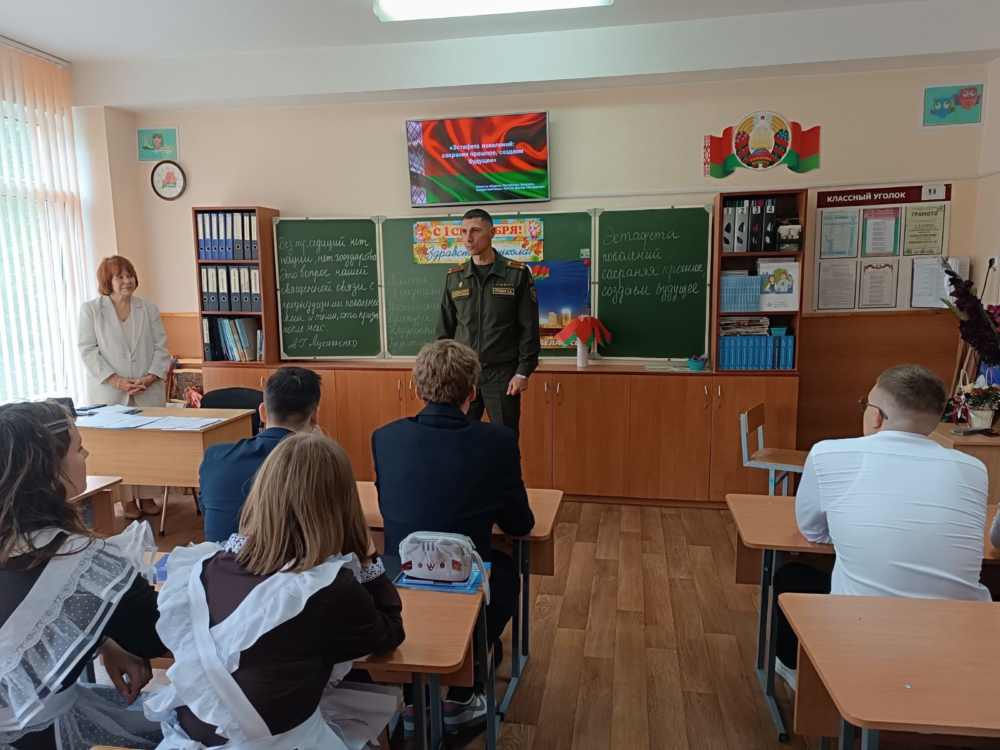
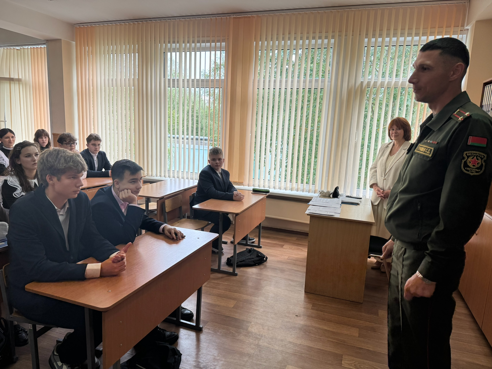
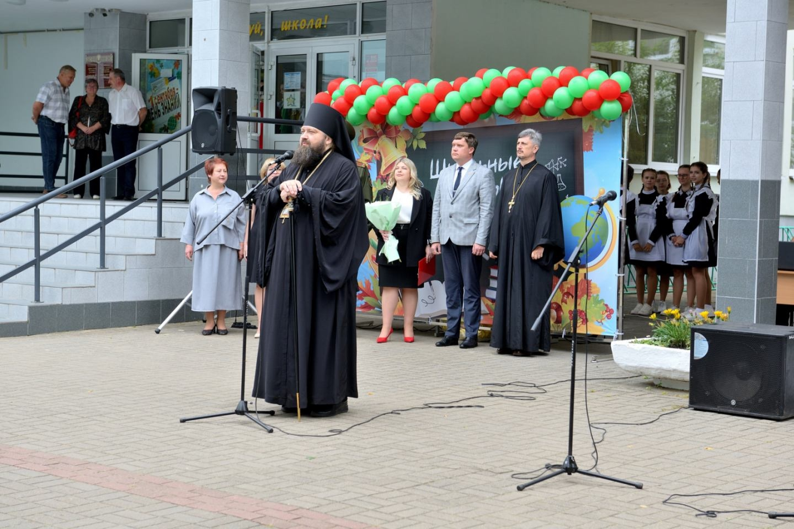

ДЕНЬ ЗНАНИЙ – С ИСКРЕННИМ ПОСЫЛОМ
И ИСТОРИЧЕСКОЙ ОТВЕТСТВЕННОСТЬЮ
Добрая традиция объединяет поколения: в самые важные дни школа традиционно приглашает военнослужащих, чтобы напомнить ученикам о ценности памяти, долга и преемственности поколений.
Сегодня, 1 сентября – в День Знаний – к десятиклассникам в гости пришёл подполковник Гришан Сергей Демьянович, заместитель командира по идеологической работе 740-го зенитного ракетного полка Северо-западного оперативного командования.
Тема первого урока – «Связь времён: наследие предков и наш выбор» – затронула важные вопросы патриотизма, личной ответственности и осознанного отношения к истории своей страны.
Этот урок стал не просто началом учебного года, а глубоким напоминанием: каждый из нас – звено в большой цепи времени, и от нашего выбора зависит будущее.


ПОЖЕЛАНИЯ ОТ ШЕФОВ!
1 сентября ознаменовало начало нового учебного года в Государственном учреждении образования «Гимназия №1 г. Борисова».
В этот особенный день школьный двор наполнился радостным гулом: первоклассники впервые переступили порог гимназии с букетами и волнением в глазах, а старшеклассники – с гордостью и новыми мечтами.
Поздравить ребят и учителей с новым учебным годом пришли почетные гости и родители. Традиционно в мероприятии принял участие и заместитель командира по идеологической работе 740-го зенитного ракетного полка Северо-западного оперативного командования, подполковник Сергей Гришан.
На протяжении нескольких лет военнослужащих полка и учащихся гимназии объединяют совместные мероприятия военно-патриотической направленности, среди которых диалоговые площадки, спортивные игры, профориентационные встречи. В этот знаменательный день Сергей Демьянович поздравил ребят с новым учебным годом, пожелал им успехов в учёбе, верных друзей, увлекательных открытий и отличных оценок!
